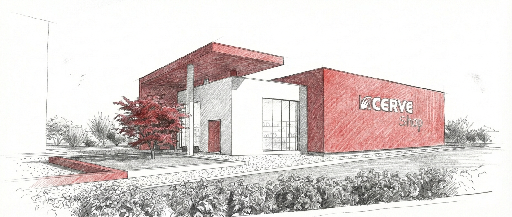

Prima dell’immagine finale c’è un’idea da rendere leggibile.
All’inizio uno schizzo può bastare per capire se un progetto ha trovato una direzione. Non deve ancora raccontare tutto, ma deve già chiarire quali elementi sono importanti e quali relazioni non vogliamo perdere.
Nel Padiglione C il grande segno rosso, il volume bianco dello showroom e la parete laterale destinata al marchio erano presenti fin dalle prime rappresentazioni. Non come decorazione aggiunta, ma come parti della stessa architettura.

Schizzo di progetto